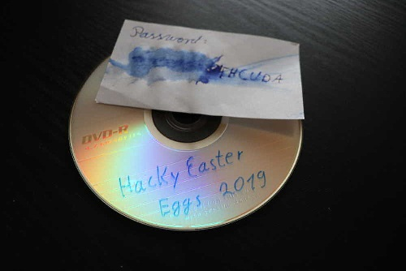

Today the new eggs for HackyEaster 2019 were delivered, but unfortunately the password was partly destroyed by a water damage.

When trying to run the application, I get past a password prompt, but then execution
stops with the error message
Cuda error: CUDA driver version is insufficient for CUDA runtime version
CUDA turns out to be multithreaded environment for running parallelized tasks on
the graphics processor, by NVIDIA. Little hope of getting that to run on a VM ...
A very easy to read introduction to CUDA can be found here, regretfully in German. A collection of points:
Disassembling and decompiling the binary gives the following main (without declarations etc):
//----- (0000000000403A3E) ----------------------------------------------------
int __cdecl main(int argc, const char **argv, const char **envp)
{
printf("Enter Password: ");
fgets(s, 17, stdin);
for ( i = 0; i <= 3; ++i )
{
v3 = (void (*)(void))((s[4 * i + 1] << 8) | (s[4 * i + 2] << 16)
| (s[4 * i + 3] << 24) | (unsigned int)s[4 * i]);
v26[i] = (signed int)v3;
}
cudaMalloc(&v24, 0x10);
cudaMalloc(&v23, 0xB0);
cudaMalloc(&v22, 0x100);
cudaMalloc(&v21, 0x100);
cudaMalloc(&v20, 0x28);
cudaMalloc(&v19, 0x1000);
cudaMalloc(&v18, 16 * ::v9);
cudaMemcpy(v24, v26, 0x10, 1);
cudaMemcpy(v22, ::v3, 0x100, 1);
cudaMemcpy(v21, ::v4, 0x100, 1);
cudaMemcpy(v20, ::v2, 0x28, 1);
cudaMemcpy(v19, ::v7, 0x1000, 1);
cudaMemcpy(v18, ::v10, 16 * ::v9, 1);
dim3::dim3((dim3 *)&v27, 1, 1, 1);
dim3::dim3((dim3 *)&v29, 1, 1, 1);
if ( !_cudaPushCallConfiguration(v29, v30, v27, v28, 0LL, 0LL) )
{
f13(v22, v21, v20, v19, 1);
}
checkError();
dim3::dim3((dim3 *)&v31, 1, 1, 1);
dim3::dim3((dim3 *)&v33, 1, 1, 1);
if ( !_cudaPushCallConfiguration(v33, v34, v31, v32, 0LL, 0LL) )
{
f3(v24, v23, v22, v20, 1);
}
dim3::dim3((dim3 *)&v35, 64, 1, 1);
dim3::dim3((dim3 *)&v37, 71, 1, 1);
if ( !_cudaPushCallConfiguration(v37, v38, v35, v36, 0LL, 0LL) )
{
f12(v18, v23, v21, v19, ::v9);
}
checkError();
v15 = v18;
cudaMemcpy(::v10, v18, 16 * ::v9, 2);
checkError();
stream = fopen("egg", "wb");
fwrite(::v10, 1uLL, 16 * ::v9, stream);
fclose(stream);
return 0;
}
The following CUDA API functions are used:
cudaMalloc (ptr, size): allocate memory on device (GPU)
ptr: points to allocated memory address pointer (return value)size: number of bytes reservedcudaMemcpy (dst, src, count, kind): copy memory area
dst: pointer to destination addrsrc: pointer to source addrcount: number of byteskind: direction of copy (1 -> Host (CPU) to Device (GPU))checkError(): test for Error in last cuda operation, show error msg and stop_cudaPushCallConfiguration (griddim, blockdim, sharedmem, stream):
push grid, block, shared memory and stream info for use by a kernel when launched
The code indicates 3 kernels which are prepared and started: f13, f3 and f12. However, the kernel code cannot be handled by a normal disassembler. To get further, at least part of the CUDA Toolkit needs to be installed, namely the Binary Utilities cuobjdump and nvdisasm. With their help, the kernels can be extracted and disassembled into PTX code. The listings are included below ... in order to make sense of them, the PTX instruction set and Demystifying PTX code were very helpful.
The first kernel called, f13, turns out to be an obfuscation step: it unscrambles the hard-coded data in ::v2, ::v3 and ::v4 by using XOR (see comments in code for details). After unscrambling and searching for the values, it turns out that ::v2 unscrambles to the Rcon table used for AES key expansion, ::v3 becomes the forward S-box and ::v4 its inverse. In other words, we are looking at AES-128. If only I could get the code to run, it would be very simple to verify this ... but no such luck. Further analysis (see inline comments in code) verifies the following program structure:
Host:
- reverse 4-byte groups of pwd for big-endian hosts (no effect for little endian)
--> compatibility with little endian device
- allocate device memory, and
- copy memory blocks to device:
ct v18 <-- ::v10 [16*::v9] encrypted data, ::v9 blocks 4x4
mult v19 <-- ::v7 [1000] multiplication table in Galois Field for MixColumns
rcon v20 <-- ::v2 [24] Rcon table for key expansion (10x dword), encoded
s_inv v21 <-- ::v4 [100] reverse s-box, encoded
s_box v22 <-- ::v3 [100] forward s-box, encoded
r_key v23 [b0] expanded key, round key
key v24 <-- s [10] key (16x chr)
Device:
f13 (s_box, s_inv, rcon, mult) (1 block, 1 thread)
decode Sbox, inverse Sbox and Rcon, obfuscation step.
f3 (key, r_key, s_box, rcon) (1 block, 1 round)
expand AES round key (key scheduler)
f12 (ct, r_key, s_inv, mult, ::v9) (71 blocks, 64 threads)
decrypt one AES block
/*
Globally visible kernel: f13
1. Decrypt ::v2 in param_2 by XOR with 0xDEADBEEF:
--> 0x01, 0x02, 0x04, 0x08, 0x10, 0x20, 0x40, 0x80, 0x1b, 0x36
2. Unscramble ::v3, ::v4 by XOR with ::v7[15, 19, 23, ...]
--> permutation of 00..ff and its inverse
*/
.visible .entry _Z3f13PhS_PjS_i(
.param .u64 _Z3f13PhS_PjS_i_param_0, // [0x100]
.param .u64 _Z3f13PhS_PjS_i_param_1, // [0x100]
.param .u64 _Z3f13PhS_PjS_i_param_2, // [0x28 = 40]
.param .u64 _Z3f13PhS_PjS_i_param_3, // [0x1000]
.param .u32 _Z3f13PhS_PjS_i_param_4 // not used (?)
)
{
.reg .pred %p<3>;
.reg .b16 %rs<49>;
.reg .b32 %r<30>;
.reg .b64 %rd<18>;
ld.param.u64 %rd10, [_Z3f13PhS_PjS_i_param_0];
ld.param.u64 %rd11, [_Z3f13PhS_PjS_i_param_1];
ld.param.u64 %rd12, [_Z3f13PhS_PjS_i_param_2];
ld.param.u64 %rd13, [_Z3f13PhS_PjS_i_param_3];
mov.u32 %r3, %ctaid.x;
mov.u32 %r4, %ntid.x;
mul.lo.s32 %r5, %r3, %r4;
mov.u32 %r6, %tid.x;
neg.s32 %r7, %r6;
setp.ne.s32 %p1, %r5, %r7; // only false if r5 = r6 = 0, i.e. ctaid = 0 and tid = 0
@%p1 bra BB3_3; // --> insure single thread only!
cvta.to.global.u64 %rd14, %rd12; // rd14 = param_2
ld.global.u32 %r9, [%rd14]; // XOR each DWORD in param_s (::v2) with 0xdeadbeef
xor.b32 %r10, %r9, -559038737; // (-559038737 = 0xdeadbeef)
ld.global.u32 %r11, [%rd14+4];
ld.global.u32 %r12, [%rd14+8];
ld.global.u32 %r13, [%rd14+12];
ld.global.u32 %r14, [%rd14+16];
ld.global.u32 %r15, [%rd14+20];
ld.global.u32 %r16, [%rd14+24];
ld.global.u32 %r17, [%rd14+28];
ld.global.u32 %r18, [%rd14+32];
ld.global.u32 %r19, [%rd14+36];
st.global.u32 [%rd14], %r10;
xor.b32 %r20, %r11, -559038737;
st.global.u32 [%rd14+4], %r20;
xor.b32 %r21, %r12, -559038737;
st.global.u32 [%rd14+8], %r21;
xor.b32 %r22, %r13, -559038737;
st.global.u32 [%rd14+12], %r22;
xor.b32 %r23, %r14, -559038737;
st.global.u32 [%rd14+16], %r23;
xor.b32 %r24, %r15, -559038737;
st.global.u32 [%rd14+20], %r24;
xor.b32 %r25, %r16, -559038737;
st.global.u32 [%rd14+24], %r25;
xor.b32 %r26, %r17, -559038737;
st.global.u32 [%rd14+28], %r26;
xor.b32 %r27, %r18, -559038737;
st.global.u32 [%rd14+32], %r27;
xor.b32 %r28, %r19, -559038737;
st.global.u32 [%rd14+36], %r28;
cvta.to.global.u64 %rd15, %rd10; // rd15 = param_0
cvta.to.global.u64 %rd17, %rd13; // rd17 = param_3
cvta.to.global.u64 %rd16, %rd11; // rd16 = param_1
mov.u32 %r29, -256;
BB3_2:
ld.global.u8 %rs1, [%rd17+15];
ld.global.u8 %rs2, [%rd15];
xor.b16 %rs3, %rs1, %rs2;
st.global.u8 [%rd15], %rs3;
ld.global.u8 %rs4, [%rd17+15];
ld.global.u8 %rs5, [%rd16];
xor.b16 %rs6, %rs4, %rs5;
st.global.u8 [%rd16], %rs6;
ld.global.u8 %rs7, [%rd17+19];
ld.global.u8 %rs8, [%rd15+1];
xor.b16 %rs9, %rs7, %rs8;
st.global.u8 [%rd15+1], %rs9;
ld.global.u8 %rs10, [%rd17+19];
ld.global.u8 %rs11, [%rd16+1];
xor.b16 %rs12, %rs10, %rs11;
st.global.u8 [%rd16+1], %rs12;
ld.global.u8 %rs13, [%rd17+23];
ld.global.u8 %rs14, [%rd15+2];
xor.b16 %rs15, %rs13, %rs14;
st.global.u8 [%rd15+2], %rs15;
ld.global.u8 %rs16, [%rd17+23];
ld.global.u8 %rs17, [%rd16+2];
xor.b16 %rs18, %rs16, %rs17;
st.global.u8 [%rd16+2], %rs18;
ld.global.u8 %rs19, [%rd17+27];
ld.global.u8 %rs20, [%rd15+3];
xor.b16 %rs21, %rs19, %rs20;
st.global.u8 [%rd15+3], %rs21;
ld.global.u8 %rs22, [%rd17+27];
ld.global.u8 %rs23, [%rd16+3];
xor.b16 %rs24, %rs22, %rs23;
st.global.u8 [%rd16+3], %rs24;
ld.global.u8 %rs25, [%rd17+31];
ld.global.u8 %rs26, [%rd15+4];
xor.b16 %rs27, %rs25, %rs26;
st.global.u8 [%rd15+4], %rs27;
ld.global.u8 %rs28, [%rd17+31];
ld.global.u8 %rs29, [%rd16+4];
xor.b16 %rs30, %rs28, %rs29;
st.global.u8 [%rd16+4], %rs30;
ld.global.u8 %rs31, [%rd17+35];
ld.global.u8 %rs32, [%rd15+5];
xor.b16 %rs33, %rs31, %rs32;
st.global.u8 [%rd15+5], %rs33;
ld.global.u8 %rs34, [%rd17+35];
ld.global.u8 %rs35, [%rd16+5];
xor.b16 %rs36, %rs34, %rs35;
st.global.u8 [%rd16+5], %rs36;
ld.global.u8 %rs37, [%rd17+39];
ld.global.u8 %rs38, [%rd15+6];
xor.b16 %rs39, %rs37, %rs38;
st.global.u8 [%rd15+6], %rs39;
ld.global.u8 %rs40, [%rd17+39];
ld.global.u8 %rs41, [%rd16+6];
xor.b16 %rs42, %rs40, %rs41;
st.global.u8 [%rd16+6], %rs42;
ld.global.u8 %rs43, [%rd17+43];
ld.global.u8 %rs44, [%rd15+7];
xor.b16 %rs45, %rs43, %rs44;
st.global.u8 [%rd15+7], %rs45;
ld.global.u8 %rs46, [%rd17+43];
ld.global.u8 %rs47, [%rd16+7];
xor.b16 %rs48, %rs46, %rs47;
st.global.u8 [%rd16+7], %rs48;
add.s64 %rd17, %rd17, 32;
add.s64 %rd16, %rd16, 8;
add.s64 %rd15, %rd15, 8;
add.s32 %r29, %r29, 8;
setp.ne.s32 %p2, %r29, 0;
@%p2 bra BB3_2;
BB3_3:
ret;
}
.version 6.3
.target sm_30
.address_size 64
/*
Globally visible kernel: f3
The password is extended from 0x10 to 0xB0 bytes.
It is read as 4 DWords
The first 4 DWords of the output are identical to the password.
The rest is cumulative XOR with a changing key determined from a constant list, and with the output from f13
These key lists are passed as parameters 2 and 3.
*/
.visible .entry _Z2f3PjS_PhS_i(
.param .u64 _Z2f3PjS_PhS_i_param_0, // pointer to password [0x10]
.param .u64 _Z2f3PjS_PhS_i_param_1, // pointer to result block [0xB0]
.param .u64 _Z2f3PjS_PhS_i_param_2, // ::v3 permutation [0x100]
.param .u64 _Z2f3PjS_PhS_i_param_3, // ::v2 list of 10 long [0x28 = 40]
// 0x01, 0x02, 0x04, 0x08, 0x10, 0x20, 0x40, 0x80, 0x1b, 0x36
.param .u32 _Z2f3PjS_PhS_i_param_4 // not used (??)
)
{
.reg .pred %p<4>;
.reg .b32 %r<41>;
.reg .b64 %rd<22>;
ld.param.u64 %rd6, [_Z2f3PjS_PhS_i_param_0];
ld.param.u64 %rd9, [_Z2f3PjS_PhS_i_param_1];
ld.param.u64 %rd7, [_Z2f3PjS_PhS_i_param_2];
ld.param.u64 %rd8, [_Z2f3PjS_PhS_i_param_3];
cvta.to.global.u64 %rd21, %rd9; // res = param_1 (result pointer)
mov.u32 %r8, %ctaid.x;
mov.u32 %r9, %ntid.x;
mul.lo.s32 %r10, %r8, %r9;
mov.u32 %r11, %tid.x;
neg.s32 %r12, %r11;
setp.ne.s32 %p1, %r10, %r12; // only false if r11 = r10 = 0, i.e. ctaid = 0 and tid = 0
@%p1 bra BB0_5; // --> insure single thread only!
cvta.to.global.u64 %rd10, %rd6; // rd10 = param_0 (password)
cvta.to.global.u64 %rd2, %rd7; // rd2 = param_2 = ::v3
ld.global.u32 %r14, [%rd10];
st.global.u32 [%rd21], %r14;
ld.global.u32 %r15, [%rd10+4];
st.global.u32 [%rd21+4], %r15;
ld.global.u32 %r16, [%rd10+8];
st.global.u32 [%rd21+8], %r16;
ld.global.u32 %r38, [%rd10+12]; // x = [param_0 + 12] (4 byte)
st.global.u32 [%rd21+12], %r38;
cvta.to.global.u64 %rd3, %rd8; // rd3 = param_3 = ::v2
mov.u32 %r39, 4; // n = 4, 6, 8, ..., 42
BB0_2:
and.b32 %r17, %r39, 2;
setp.ne.s32 %p2, %r17, 0;
@%p2 bra BB0_4;
// n AND 2 == 0: n is multiple of 4
bfe.u32 %r18, %r38, 8, 8;
cvt.u64.u32 %rd11, %r18;
add.s64 %rd12, %rd2, %rd11;
ld.global.u8 %r19, [%rd12]; // r19 = [param_2 + x.b1] = ::v3[x.b1] (1 byte)
bfe.u32 %r20, %r38, 16, 8; // x.b1 means byte 1 of x
cvt.u64.u32 %rd13, %r20;
add.s64 %rd14, %rd2, %rd13;
ld.global.u8 %r21, [%rd14]; // r21 = [param_2 + x.b2] = ::v3[x.b2] (1 byte)
prmt.b32 %r22, %r21, %r19, 30212; // r22 = (r19.b3, r19.b2, r21.b0, r19.b0) 0x7604
// = (0, 0, r21, r19) because r19, 21 are 1 byte
shr.u32 %r23, %r38, 24;
cvt.u64.u32 %rd15, %r23;
add.s64 %rd16, %rd2, %rd15;
ld.global.u8 %r24, [%rd16]; // r24 = [param_2 + x.b3] = ::v3[x.b3] (1 byte)
prmt.b32 %r25, %r24, %r22, 28756; // r25 = (r22.b3, r24.b0, r22.b1, r22.b0) 0x7054
and.b32 %r26, %r38, 255;
cvt.u64.u32 %rd17, %r26;
add.s64 %rd18, %rd2, %rd17;
ld.global.u8 %r27, [%rd18]; // r27 = [param_2 + x.b0] = ::v3[x.b0] (1 byte)
prmt.b32 %r28, %r27, %r25, 1620; // r28 = (r27.b0, r25.b2, r25.b1, r25.b0) 0x0654
shr.s32 %r29, %r39, 31; // r29 = n >>a 31 (= FFFFFFFF or 0)
shr.u32 %r30, %r29, 30; // r30 = r29 >> 30 (= 3 iff msb(n) = 1)
add.s32 %r31, %r39, %r30; // r31 = n + r30
shr.s32 %r32, %r31, 2; // r32 = r31 >> 2
add.s32 %r33, %r32, -1; // r33 = r32 - 1
mul.wide.s32 %rd19, %r33, 4; // rd19 = r33 * 4
add.s64 %rd20, %rd3, %rd19; // overkill, because n % 4 = 0
ld.global.u32 %r34, [%rd20]; // r34 = [param_3 + (n - 4)] = ::v2[n/4 - 1] (4 byte)
xor.b32 %r38, %r34, %r28; // x = r28 ^ r34
// = (r27.b0, r24.b0, r21.b0, r19.b0) ^ r34
// = (::v3[x.b0], ::v3[x.b3], ::v3[x.b2], ::v3[x.b1]) ^ r34
BB0_4:
ld.global.u32 %r35, [%rd21]; // r35 = [res]
xor.b32 %r36, %r35, %r38; // r36 = r35 ^ x
ld.global.u32 %r37, [%rd21+4]; // r37 = [res + 4]
st.global.u32 [%rd21+16], %r36; // [res + 16] = r36 = [res] ^ x
xor.b32 %r38, %r37, %r36; // x = r36 ^ r37 = x ^ [res] ^ [res + 4]
st.global.u32 [%rd21+20], %r38; // [res + 20] = x
add.s64 %rd21, %rd21, 8; // res += 8
add.s32 %r39, %r39, 2; // n += 2
setp.lt.s32 %p3, %r39, 44; // n < 44?
@%p3 bra BB0_2;
BB0_5:
ret;
}
.visible .entry _Z3f12PhPjS_S_i(
.param .u64 _Z3f12PhPjS_S_i_param_0, // ::v10 cryptotext (grouped in 16 byte chunks)
.param .u64 _Z3f12PhPjS_S_i_param_1, // Round key: 44 long [0xB0]
.param .u64 _Z3f12PhPjS_S_i_param_2, // ::v4 inverseS-Box
.param .u64 _Z3f12PhPjS_S_i_param_3, // ::v7 multiplication table
.param .u32 _Z3f12PhPjS_S_i_param_4 // ::v9 number of blocks
)
{
.reg .pred %p<8>;
.reg .b16 %rs<169>;
.reg .b32 %r<118>;
.reg .b64 %rd<156>;
ld.param.u64 %rd12, [_Z3f12PhPjS_S_i_param_0];
ld.param.u64 %rd15, [_Z3f12PhPjS_S_i_param_1];
ld.param.u64 %rd13, [_Z3f12PhPjS_S_i_param_2];
ld.param.u64 %rd14, [_Z3f12PhPjS_S_i_param_3];
ld.param.u32 %r26, [_Z3f12PhPjS_S_i_param_4];
cvta.to.global.u64 %rd1, %rd15; // rd1 = extended password = key[]
mov.u32 %r1, %ctaid.x;
mov.u32 %r2, %ntid.x;
mov.u32 %r3, %tid.x;
mad.lo.s32 %r4, %r1, %r2, %r3; // r4 = global thread index
setp.ge.s32 %p1, %r4, %r26; // calculate in one thread per ct chunk
@%p1 bra BB2_13;
// AES decryption code
// 1. Initial round: AddRoundKey, InvShiftRows, InvSubBytes
cvta.to.global.u64 %rd16, %rd13; // rd16 = Inv Sbox
cvta.to.global.u64 %rd17, %rd12;
shl.b32 %r29, %r4, 4;
cvt.s64.s32 %rd18, %r29;
add.s64 %rd3, %rd17, %rd18; // rd3 = start of assigned ct block = ct[]
// organisation: ct[0] ct[4] ct[8] ct[c]
// ct[1] ct[5] ct[9] ct[d]
// ct[2] ct[6] ct[a] ct[e]
// ct[3] ct[7] ct[b] ct[f]
ld.global.u32 %r30, [%rd3]; // AddRoundKey stage 10 (by dword) acting on cols
ld.global.u32 %r31, [%rd1+160]; // ct[4*i] -> ct[4*i] ^ r_key[10][4*i]
xor.b32 %r32, %r30, %r31; // InvShiftRows (by byte)
ld.global.u32 %r33, [%rd3+4]; // ct[1] -> ct[5] -> ct[9] -> ct[d] -->
ld.global.u32 %r34, [%rd3+8]; // ct[2] <-> ct[a], ct[6] <-> ct[e]
ld.global.u32 %r35, [%rd3+12]; // ct[3] -> ct[f] -> ct[b] -> ct[7] -->
st.global.u32 [%rd3], %r32;
ld.global.u32 %r36, [%rd1+164];
xor.b32 %r37, %r33, %r36;
st.global.u32 [%rd3+4], %r37;
ld.global.u32 %r38, [%rd1+168];
xor.b32 %r39, %r34, %r38;
st.global.u32 [%rd3+8], %r39;
ld.global.u32 %r40, [%rd1+172];
xor.b32 %r41, %r35, %r40;
st.global.u32 [%rd3+12], %r41;
ld.global.u8 %rs1, [%rd3+1];
ld.global.u8 %rs2, [%rd3+13];
ld.global.u8 %rs3, [%rd3+9];
ld.global.u8 %rs4, [%rd3+5];
ld.global.v2.u8 {%rs5, %rs6}, [%rd3+2];
ld.global.v2.u8 {%rs7, %rs8}, [%rd3+6];
ld.global.v2.u8 {%rs9, %rs10}, [%rd3+10];
ld.global.v2.u8 {%rs11, %rs12}, [%rd3+14];
st.global.u8 [%rd3+1], %rs2;
st.global.u8 [%rd3+13], %rs3;
st.global.u8 [%rd3+9], %rs4;
st.global.u8 [%rd3+5], %rs1;
st.global.v2.u8 [%rd3+2], {%rs9, %rs8};
st.global.v2.u8 [%rd3+6], {%rs11, %rs10};
st.global.v2.u8 [%rd3+10], {%rs5, %rs12};
st.global.v2.u8 [%rd3+14], {%rs7, %rs6};
cvt.u64.u32 %rd19, %r32; // InvSubBytes by byte
and.b64 %rd20, %rd19, 255; // ct[n] -> s_inv[ct[n]]
add.s64 %rd21, %rd16, %rd20;
ld.global.u8 %rs21, [%rd21];
st.global.u8 [%rd3], %rs21;
cvt.u64.u16 %rd22, %rs2;
and.b64 %rd23, %rd22, 255;
add.s64 %rd24, %rd16, %rd23;
ld.global.u8 %rs22, [%rd24];
st.global.u8 [%rd3+1], %rs22;
cvt.u64.u16 %rd25, %rs9;
add.s64 %rd26, %rd16, %rd25;
ld.global.u8 %rs23, [%rd26];
st.global.u8 [%rd3+2], %rs23;
cvt.u64.u16 %rd27, %rs8;
add.s64 %rd28, %rd16, %rd27;
ld.global.u8 %rs24, [%rd28];
st.global.u8 [%rd3+3], %rs24;
cvt.u64.u32 %rd29, %r37;
and.b64 %rd30, %rd29, 255;
add.s64 %rd31, %rd16, %rd30;
ld.global.u8 %rs25, [%rd31];
st.global.u8 [%rd3+4], %rs25;
cvt.u64.u16 %rd32, %rs1;
and.b64 %rd33, %rd32, 255;
add.s64 %rd34, %rd16, %rd33;
ld.global.u8 %rs26, [%rd34];
st.global.u8 [%rd3+5], %rs26;
cvt.u64.u16 %rd35, %rs11;
add.s64 %rd36, %rd16, %rd35;
ld.global.u8 %rs27, [%rd36];
st.global.u8 [%rd3+6], %rs27;
cvt.u64.u16 %rd37, %rs10;
add.s64 %rd38, %rd16, %rd37;
ld.global.u8 %rs28, [%rd38];
st.global.u8 [%rd3+7], %rs28;
cvt.u64.u32 %rd39, %r39;
and.b64 %rd40, %rd39, 255;
add.s64 %rd41, %rd16, %rd40;
ld.global.u8 %rs29, [%rd41];
st.global.u8 [%rd3+8], %rs29;
cvt.u64.u16 %rd42, %rs4;
and.b64 %rd43, %rd42, 255;
add.s64 %rd44, %rd16, %rd43;
ld.global.u8 %rs30, [%rd44];
st.global.u8 [%rd3+9], %rs30;
cvt.u64.u16 %rd45, %rs5;
add.s64 %rd46, %rd16, %rd45;
ld.global.u8 %rs31, [%rd46];
st.global.u8 [%rd3+10], %rs31;
cvt.u64.u16 %rd47, %rs12;
add.s64 %rd48, %rd16, %rd47;
ld.global.u8 %rs32, [%rd48];
st.global.u8 [%rd3+11], %rs32;
cvt.u64.u32 %rd49, %r41;
and.b64 %rd50, %rd49, 255;
add.s64 %rd51, %rd16, %rd50;
ld.global.u8 %rs33, [%rd51];
st.global.u8 [%rd3+12], %rs33;
cvt.u64.u16 %rd52, %rs3;
and.b64 %rd53, %rd52, 255;
add.s64 %rd54, %rd16, %rd53;
ld.global.u8 %rs34, [%rd54];
st.global.u8 [%rd3+13], %rs34;
cvt.u64.u16 %rd55, %rs7;
add.s64 %rd56, %rd16, %rd55;
ld.global.u8 %rs35, [%rd56];
st.global.u8 [%rd3+14], %rs35;
cvt.u64.u16 %rd57, %rs6;
add.s64 %rd58, %rd16, %rd57;
ld.global.u8 %rs36, [%rd58];
st.global.u8 [%rd3+15], %rs36;
mov.u32 %r110, 9;
mov.u32 %r27, 0;
cvta.to.global.u64 %rd72, %rd14; // rd72 = mult (multiplication table over Galois Field)
mov.u32 %r109, %r27;
BB2_2: // 9 rounds: InvMixColumns, AddRoundKey, InvShiftRows, InvSubBytes
shl.b32 %r45, %r109, 2;
mov.u32 %r46, 39;
sub.s32 %r47, %r46, %r45;
mov.u32 %r48, 36;
sub.s32 %r49, %r48, %r45;
max.s32 %r50, %r47, %r49;
add.s32 %r51, %r45, %r50;
add.s32 %r7, %r51, -35;
shl.b32 %r8, %r110, 2;
and.b32 %r9, %r7, 3;
setp.eq.s32 %p2, %r9, 0;
mov.u32 %r115, %r8;
mov.u32 %r116, %r27;
@%p2 bra BB2_8;
setp.eq.s32 %p3, %r9, 1;
mov.u32 %r114, 0;
mov.u32 %r113, %r8;
@%p3 bra BB2_7;
setp.eq.s32 %p4, %r9, 2;
mov.u32 %r112, 0;
mov.u32 %r111, %r8;
@%p4 bra BB2_6;
mul.wide.s32 %rd60, %r8, 4;
add.s64 %rd61, %rd1, %rd60;
ld.global.u32 %r55, [%rd3];
ld.global.u32 %r56, [%rd61];
xor.b32 %r57, %r55, %r56;
st.global.u32 [%rd3], %r57;
add.s32 %r111, %r8, 1;
mov.u32 %r112, 1;
BB2_6:
mul.wide.s32 %rd62, %r111, 4;
add.s64 %rd63, %rd1, %rd62;
mul.wide.u32 %rd64, %r112, 4;
add.s64 %rd65, %rd3, %rd64;
ld.global.u32 %r58, [%rd65];
ld.global.u32 %r59, [%rd63];
xor.b32 %r60, %r58, %r59;
st.global.u32 [%rd65], %r60;
add.s32 %r114, %r112, 1;
add.s32 %r113, %r111, 1;
BB2_7:
mul.wide.s32 %rd66, %r113, 4;
add.s64 %rd67, %rd1, %rd66;
mul.wide.s32 %rd68, %r114, 4;
add.s64 %rd69, %rd3, %rd68;
ld.global.u32 %r61, [%rd69];
ld.global.u32 %r62, [%rd67];
xor.b32 %r63, %r61, %r62;
st.global.u32 [%rd69], %r63;
add.s32 %r116, %r114, 1;
add.s32 %r115, %r113, 1;
BB2_8:
setp.lt.u32 %p5, %r7, 4;
@%p5 bra BB2_11;
add.s32 %r117, %r115, -4;
mul.wide.s32 %rd70, %r115, 4;
add.s64 %rd155, %rd1, %rd70;
shl.b32 %r64, %r116, 2;
cvt.s64.s32 %rd71, %r64;
add.s64 %rd154, %rd3, %rd71;
BB2_10:
ld.global.u32 %r65, [%rd154];
ld.global.u32 %r66, [%rd155];
xor.b32 %r67, %r65, %r66;
ld.global.u32 %r68, [%rd154+4];
ld.global.u32 %r69, [%rd154+8];
ld.global.u32 %r70, [%rd154+12];
st.global.u32 [%rd154], %r67;
ld.global.u32 %r71, [%rd155+4];
xor.b32 %r72, %r68, %r71;
st.global.u32 [%rd154+4], %r72;
ld.global.u32 %r73, [%rd155+8];
xor.b32 %r74, %r69, %r73;
st.global.u32 [%rd154+8], %r74;
ld.global.u32 %r75, [%rd155+12];
xor.b32 %r76, %r70, %r75;
st.global.u32 [%rd154+12], %r76;
add.s64 %rd155, %rd155, 16;
add.s64 %rd154, %rd154, 16;
add.s32 %r117, %r117, 4;
setp.lt.s32 %p6, %r117, %r8;
@%p6 bra BB2_10;
BB2_11: // AddRoundKey stage (10-rd) (by dword) acting on cols
ld.global.u8 %r77, [%rd3];
mul.wide.u32 %rd73, %r77, 16;
add.s64 %rd74, %rd72, %rd73;
ld.global.u8 %r78, [%rd3+1];
mul.wide.u32 %rd75, %r78, 16;
add.s64 %rd76, %rd72, %rd75;
ld.global.u8 %rs37, [%rd76+11];
ld.global.u8 %rs38, [%rd74+14];
xor.b16 %rs39, %rs37, %rs38;
ld.global.u8 %r79, [%rd3+2];
mul.wide.u32 %rd77, %r79, 16;
add.s64 %rd78, %rd72, %rd77;
ld.global.u8 %rs40, [%rd78+13];
xor.b16 %rs41, %rs39, %rs40;
ld.global.u8 %rs42, [%rd3+3];
mul.wide.u16 %r80, %rs42, 16;
add.s32 %r81, %r80, 9;
cvt.s64.s32 %rd79, %r81;
add.s64 %rd80, %rd72, %rd79;
ld.global.u8 %rs43, [%rd80];
xor.b16 %rs44, %rs41, %rs43;
ld.global.u8 %r82, [%rd3+4];
ld.global.u8 %r83, [%rd3+5];
ld.global.u8 %r84, [%rd3+6];
ld.global.u8 %rs45, [%rd3+7];
ld.global.u8 %r85, [%rd3+8];
ld.global.u8 %r86, [%rd3+9];
ld.global.u8 %r87, [%rd3+10];
ld.global.u8 %rs46, [%rd3+11];
ld.global.u8 %r88, [%rd3+12];
ld.global.u8 %r89, [%rd3+13];
ld.global.u8 %r90, [%rd3+14];
ld.global.u8 %rs47, [%rd3+15];
st.global.u8 [%rd3], %rs44;
ld.global.u8 %rs48, [%rd76+14];
ld.global.u8 %rs49, [%rd74+9];
xor.b16 %rs50, %rs48, %rs49;
ld.global.u8 %rs51, [%rd78+11];
xor.b16 %rs52, %rs50, %rs51;
ld.global.u8 %rs53, [%rd80+4];
xor.b16 %rs54, %rs52, %rs53;
st.global.u8 [%rd3+1], %rs54;
ld.global.u8 %rs55, [%rd76+9];
ld.global.u8 %rs56, [%rd74+13];
xor.b16 %rs57, %rs55, %rs56;
ld.global.u8 %rs58, [%rd78+14];
xor.b16 %rs59, %rs57, %rs58;
ld.global.u8 %rs60, [%rd80+2];
xor.b16 %rs61, %rs59, %rs60;
st.global.u8 [%rd3+2], %rs61;
ld.global.u8 %rs62, [%rd76+13];
ld.global.u8 %rs63, [%rd74+11];
xor.b16 %rs64, %rs62, %rs63;
ld.global.u8 %rs65, [%rd78+9];
xor.b16 %rs66, %rs64, %rs65;
ld.global.u8 %rs67, [%rd80+5];
xor.b16 %rs68, %rs66, %rs67;
st.global.u8 [%rd3+3], %rs68;
mul.wide.u32 %rd81, %r82, 16;
add.s64 %rd82, %rd72, %rd81;
mul.wide.u32 %rd83, %r83, 16;
add.s64 %rd84, %rd72, %rd83;
ld.global.u8 %rs69, [%rd84+11];
ld.global.u8 %rs70, [%rd82+14];
xor.b16 %rs71, %rs69, %rs70;
mul.wide.u32 %rd85, %r84, 16;
add.s64 %rd86, %rd72, %rd85;
ld.global.u8 %rs72, [%rd86+13];
xor.b16 %rs73, %rs71, %rs72;
mul.wide.u16 %r91, %rs45, 16;
add.s32 %r92, %r91, 9;
cvt.s64.s32 %rd87, %r92;
add.s64 %rd88, %rd72, %rd87;
ld.global.u8 %rs74, [%rd88];
xor.b16 %rs75, %rs73, %rs74;
st.global.u8 [%rd3+4], %rs75;
ld.global.u8 %rs76, [%rd84+14];
ld.global.u8 %rs77, [%rd82+9];
xor.b16 %rs78, %rs76, %rs77;
ld.global.u8 %rs79, [%rd86+11];
xor.b16 %rs80, %rs78, %rs79;
ld.global.u8 %rs81, [%rd88+4];
xor.b16 %rs82, %rs80, %rs81;
st.global.u8 [%rd3+5], %rs82;
ld.global.u8 %rs83, [%rd84+9];
ld.global.u8 %rs84, [%rd82+13];
xor.b16 %rs85, %rs83, %rs84;
ld.global.u8 %rs86, [%rd86+14];
xor.b16 %rs87, %rs85, %rs86;
ld.global.u8 %rs88, [%rd88+2];
xor.b16 %rs89, %rs87, %rs88;
st.global.u8 [%rd3+6], %rs89;
ld.global.u8 %rs90, [%rd84+13];
ld.global.u8 %rs91, [%rd82+11];
xor.b16 %rs92, %rs90, %rs91;
ld.global.u8 %rs93, [%rd86+9];
xor.b16 %rs94, %rs92, %rs93;
ld.global.u8 %rs95, [%rd88+5];
xor.b16 %rs96, %rs94, %rs95;
st.global.u8 [%rd3+7], %rs96;
mul.wide.u32 %rd89, %r85, 16;
add.s64 %rd90, %rd72, %rd89;
mul.wide.u32 %rd91, %r86, 16;
add.s64 %rd92, %rd72, %rd91;
ld.global.u8 %rs97, [%rd92+11];
ld.global.u8 %rs98, [%rd90+14];
xor.b16 %rs99, %rs97, %rs98;
mul.wide.u32 %rd93, %r87, 16;
add.s64 %rd94, %rd72, %rd93;
ld.global.u8 %rs100, [%rd94+13];
xor.b16 %rs101, %rs99, %rs100;
mul.wide.u16 %r93, %rs46, 16;
add.s32 %r94, %r93, 9;
cvt.s64.s32 %rd95, %r94;
add.s64 %rd96, %rd72, %rd95;
ld.global.u8 %rs102, [%rd96];
xor.b16 %rs103, %rs101, %rs102;
st.global.u8 [%rd3+8], %rs103;
ld.global.u8 %rs104, [%rd92+14];
ld.global.u8 %rs105, [%rd90+9];
xor.b16 %rs106, %rs104, %rs105;
ld.global.u8 %rs107, [%rd94+11];
xor.b16 %rs108, %rs106, %rs107;
ld.global.u8 %rs109, [%rd96+4];
xor.b16 %rs110, %rs108, %rs109;
st.global.u8 [%rd3+9], %rs110;
ld.global.u8 %rs111, [%rd92+9];
ld.global.u8 %rs112, [%rd90+13];
xor.b16 %rs113, %rs111, %rs112;
ld.global.u8 %rs114, [%rd94+14];
xor.b16 %rs115, %rs113, %rs114;
ld.global.u8 %rs116, [%rd96+2];
xor.b16 %rs117, %rs115, %rs116;
st.global.u8 [%rd3+10], %rs117;
ld.global.u8 %rs118, [%rd92+13];
ld.global.u8 %rs119, [%rd90+11];
xor.b16 %rs120, %rs118, %rs119;
ld.global.u8 %rs121, [%rd94+9];
xor.b16 %rs122, %rs120, %rs121;
ld.global.u8 %rs123, [%rd96+5];
xor.b16 %rs124, %rs122, %rs123;
st.global.u8 [%rd3+11], %rs124;
mul.wide.u32 %rd97, %r88, 16;
add.s64 %rd98, %rd72, %rd97;
mul.wide.u32 %rd99, %r89, 16;
add.s64 %rd100, %rd72, %rd99;
ld.global.u8 %rs125, [%rd100+11];
ld.global.u8 %rs126, [%rd98+14];
xor.b16 %rs127, %rs125, %rs126;
mul.wide.u32 %rd101, %r90, 16;
add.s64 %rd102, %rd72, %rd101;
ld.global.u8 %rs128, [%rd102+13];
xor.b16 %rs129, %rs127, %rs128;
mul.wide.u16 %r95, %rs47, 16;
add.s32 %r96, %r95, 9;
cvt.s64.s32 %rd103, %r96;
add.s64 %rd104, %rd72, %rd103;
ld.global.u8 %rs130, [%rd104];
xor.b16 %rs131, %rs129, %rs130;
st.global.u8 [%rd3+12], %rs131;
ld.global.u8 %rs132, [%rd100+14];
ld.global.u8 %rs133, [%rd98+9];
xor.b16 %rs134, %rs132, %rs133;
ld.global.u8 %rs135, [%rd102+11];
xor.b16 %rs136, %rs134, %rs135;
ld.global.u8 %rs137, [%rd104+4];
xor.b16 %rs138, %rs136, %rs137;
st.global.u8 [%rd3+13], %rs138;
ld.global.u8 %rs139, [%rd100+9];
ld.global.u8 %rs140, [%rd98+13];
xor.b16 %rs141, %rs139, %rs140;
ld.global.u8 %rs142, [%rd102+14];
xor.b16 %rs143, %rs141, %rs142;
ld.global.u8 %rs144, [%rd104+2];
xor.b16 %rs145, %rs143, %rs144;
st.global.u8 [%rd3+14], %rs145;
ld.global.u8 %rs146, [%rd100+13];
ld.global.u8 %rs147, [%rd98+11];
xor.b16 %rs148, %rs146, %rs147;
ld.global.u8 %rs149, [%rd102+9];
xor.b16 %rs150, %rs148, %rs149;
ld.global.u8 %rs151, [%rd104+5];
xor.b16 %rs152, %rs150, %rs151;
st.global.u8 [%rd3+1], %rs138;
st.global.u8 [%rd3+13], %rs110;
st.global.u8 [%rd3+9], %rs82;
st.global.u8 [%rd3+5], %rs54;
st.global.u8 [%rd3+2], %rs117;
st.global.u8 [%rd3+10], %rs61;
st.global.u8 [%rd3+6], %rs145;
st.global.u8 [%rd3+14], %rs89;
st.global.u8 [%rd3+3], %rs96;
st.global.u8 [%rd3+7], %rs124;
st.global.u8 [%rd3+11], %rs152;
st.global.u8 [%rd3+15], %rs68;
cvt.u64.u16 %rd106, %rs44; // InvSubBytes by byte
and.b64 %rd107, %rd106, 255; // ct[n] -> s_inv[ct[n]]
add.s64 %rd108, %rd16, %rd107;
ld.global.u8 %rs153, [%rd108];
st.global.u8 [%rd3], %rs153;
cvt.u64.u16 %rd109, %rs138;
and.b64 %rd110, %rd109, 255;
add.s64 %rd111, %rd16, %rd110;
ld.global.u8 %rs154, [%rd111];
st.global.u8 [%rd3+1], %rs154;
cvt.u64.u16 %rd112, %rs117;
and.b64 %rd113, %rd112, 255;
add.s64 %rd114, %rd16, %rd113;
ld.global.u8 %rs155, [%rd114];
st.global.u8 [%rd3+2], %rs155;
cvt.u64.u16 %rd115, %rs96;
and.b64 %rd116, %rd115, 255;
add.s64 %rd117, %rd16, %rd116;
ld.global.u8 %rs156, [%rd117];
st.global.u8 [%rd3+3], %rs156;
cvt.u64.u16 %rd118, %rs75;
and.b64 %rd119, %rd118, 255;
add.s64 %rd120, %rd16, %rd119;
ld.global.u8 %rs157, [%rd120];
st.global.u8 [%rd3+4], %rs157;
cvt.u64.u16 %rd121, %rs54;
and.b64 %rd122, %rd121, 255;
add.s64 %rd123, %rd16, %rd122;
ld.global.u8 %rs158, [%rd123];
st.global.u8 [%rd3+5], %rs158;
cvt.u64.u16 %rd124, %rs145;
and.b64 %rd125, %rd124, 255;
add.s64 %rd126, %rd16, %rd125;
ld.global.u8 %rs159, [%rd126];
st.global.u8 [%rd3+6], %rs159;
cvt.u64.u16 %rd127, %rs124;
and.b64 %rd128, %rd127, 255;
add.s64 %rd129, %rd16, %rd128;
ld.global.u8 %rs160, [%rd129];
st.global.u8 [%rd3+7], %rs160;
cvt.u64.u16 %rd130, %rs103;
and.b64 %rd131, %rd130, 255;
add.s64 %rd132, %rd16, %rd131;
ld.global.u8 %rs161, [%rd132];
st.global.u8 [%rd3+8], %rs161;
cvt.u64.u16 %rd133, %rs82;
and.b64 %rd134, %rd133, 255;
add.s64 %rd135, %rd16, %rd134;
ld.global.u8 %rs162, [%rd135];
st.global.u8 [%rd3+9], %rs162;
cvt.u64.u16 %rd136, %rs61;
and.b64 %rd137, %rd136, 255;
add.s64 %rd138, %rd16, %rd137;
ld.global.u8 %rs163, [%rd138];
st.global.u8 [%rd3+10], %rs163;
cvt.u64.u16 %rd139, %rs152;
and.b64 %rd140, %rd139, 255;
add.s64 %rd141, %rd16, %rd140;
ld.global.u8 %rs164, [%rd141];
st.global.u8 [%rd3+11], %rs164;
cvt.u64.u16 %rd142, %rs131;
and.b64 %rd143, %rd142, 255;
add.s64 %rd144, %rd16, %rd143;
ld.global.u8 %rs165, [%rd144];
st.global.u8 [%rd3+12], %rs165;
cvt.u64.u16 %rd145, %rs110;
and.b64 %rd146, %rd145, 255;
add.s64 %rd147, %rd16, %rd146;
ld.global.u8 %rs166, [%rd147];
st.global.u8 [%rd3+13], %rs166;
cvt.u64.u16 %rd148, %rs89;
and.b64 %rd149, %rd148, 255;
add.s64 %rd150, %rd16, %rd149;
ld.global.u8 %rs167, [%rd150];
st.global.u8 [%rd3+14], %rs167;
cvt.u64.u16 %rd151, %rs68;
and.b64 %rd152, %rd151, 255;
add.s64 %rd153, %rd16, %rd152;
ld.global.u8 %rs168, [%rd153];
st.global.u8 [%rd3+15], %rs168;
add.s32 %r110, %r110, -1;
setp.gt.s32 %p7, %r110, 0;
add.s32 %r109, %r109, 1;
@%p7 bra BB2_2;
ld.global.u32 %r97, [%rd1]; // Final AddRoundKey
ld.global.u32 %r98, [%rd3];
xor.b32 %r99, %r98, %r97;
ld.global.u32 %r100, [%rd3+4];
ld.global.u32 %r101, [%rd3+8];
ld.global.u32 %r102, [%rd3+12];
st.global.u32 [%rd3], %r99;
ld.global.u32 %r103, [%rd1+4];
xor.b32 %r104, %r100, %r103;
st.global.u32 [%rd3+4], %r104;
ld.global.u32 %r105, [%rd1+8];
xor.b32 %r106, %r101, %r105;
st.global.u32 [%rd3+8], %r106;
ld.global.u32 %r107, [%rd1+12];
xor.b32 %r108, %r102, %r107;
st.global.u32 [%rd3+12], %r108;
BB2_13:
ret;
}
We now know that the application is a parallelized implementation of standard AES-128 in ECB mode. This means that any hope of reverse engineering the lost password is futile. Luckily a few letters remain legible, so brute-forcing the rest becomes feasible.
In order to reduce the parameter space, one can try to guess some properties by enhancing the image a bit. It seems that the password ends in "WITHCUDA" and that it has the full 16 characters. It looks as if the letters "CRA" appear in the middle of the first part. Assuming that only capitals are used, this leaves 26^5 = 11881376 possibilities for each position of the letters "CRA" ... which is within scope of a python script. To test the password, one could check the final block for correct padding, which is a good criterion as long as one is not unlucky and only 1 or 2 bytes of padding are used. However, it looks pretty likely that the code decrypts to a PNG file, so one might as well check the first block for the sequence b'\x89PNG' at the start.
from Cryptodome.Cipher import AES
import string
# first CT block
ct = b'\x71\x31\xAD\x54\xEF\x04\xDB\xA5\x03\x30\x0C\x0F\xF7\xBD\x83\x8E'
alph = string.ascii_uppercase
for k1 in range(len(alph)):
print(k1)
for k2 in range(len(alph)):
for k3 in range(len(alph)):
for k4 in range(len(alph)):
for k5 in range(len(alph)):
key = (alph[k1] + alph[k2] + alph[k3] + "CRA" + alph[k4] + alph[k5] +
"WITHCUDA").encode()
cipher = AES.new(key, AES.MODE_ECB)
pt = cipher.decrypt(ct)
if pt[:4] == b'\x89PNG':
print(key, pt)
It turned out that the guess was good. When trying key[3:6] = "CRA", a hit was found
b'AESCRACKWITHCUDA' b'\x89PNG\r\n\x1a\n\x00\x00\x00\rIHDR'
Decryption of the complete code block in ::v10 yielded the egg.
from Cryptodome.Cipher import AES
key = b'AESCRACKWITHCUDA'
with open("v10", "rb") as fh:
ct = fh.read()
cipher = AES.new(key, AES.MODE_ECB)
pt = cipher.decrypt(ct)
with open("v10_dec.png", "wb") as fh:
fh.write(pt)